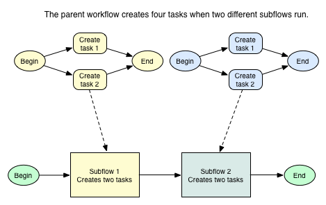

Subflow Activities
Contents
1 Overview
Use subflow activities to run and manage workflows from a parent workflow. For more information on creating subflows, see Using Subflows. Subflow activities are available starting with the Eureka release.
2 Parallel Flow Launcher
The Parallel Flow Launcher activity launches multiple subflows in parallel. Workflows running in parallel execute simultaneously and may complete in any order. The activity can launch a single subflow or multiple different subflows as many times as needed. You can manage the input values and values returned for each subflow.
2.1 Input Variables
| Field | Description |
|---|---|
| Inputs | The starting values for the parallel subflows to launch. Enter an array of input variables and their values to run one subflow for each set of input variables. The name and data type of each input variable entered must match those used by the subflow that this activity launches. The example shows how to define an array of input variables. |
| Advanced | A check box to enter a script to manage the subflows. |
| Workflow | The workflow to run. If Advanced is not selected, select a workflow to run. If Advanced is selected, enter a script that uses a WorkflowCoordinator object to manage the subflows. With a script, you can specify a unique workflow for each set of input variables. See Using a WorkflowCoordinator Object for more information. |
| Count | Number of subflows executed in parallel from this activity. If the Advanced option is not selected, ensure that this field is populated with a valid number. |
| Max flows | The maximum number of workflows this activity can launch. If this value is a positive integer, it overrides the max parameter used in the WorkflowCoordinator constructor. |
| Max simultaneous | The maximum number of parallel workflows this activity can run at one time. If this value is a positive integer, it overrides the poolsize parameter used in the WorkflowCoordinator constructor. |
| Process flow complete | A check box to enter a script that runs after each subflow completes. |
| Flow complete | The script that runs after a subflow is complete. You can use variables that contain completed flow information in this script. This field is available when Process flow complete is selected. |
| Process finished | A check box to enter a script that runs after all subflows are complete. |
| Finished script | The script that runs after all subflows launched by the activity are complete. You can use variables that contain completed flow information in this script. This field is available when Process finished is selected. |
2.2 States
To view an activity's state, point to the activity. A pop-up window shows the State and Result of the activity. If the activity is in an error state, the pop-up window provides a brief Fault Description.
| State | Description |
|---|---|
| Waiting | The activity is waiting for all subflows to finish. All subflows have started and some may have finished. |
| Finished | The activity successfully completed all of the subflows. |
| Error | The activity encountered an error. |
2.3 Using a WorkflowCoordinator Object
A WorkflowCoordinator object specifies which subflows to run and the input variables to pass to those subflows. When using a WorkflowCoordinator object, you can create a Parallel Flow Launcher activity that launches multiple, different subflows. When using the activity without a WorkflowCoordinator object, you can only launch a single subflow multiple times. Use one of the following methods to specify a WorkflowCoordinator object for the activity when the Advanced activity input variable is selected.
- Reference a workflow scratchpad variable that contains an existing WorkflowCoordinator object. To save a WorkflowCoordinator object to the scratchpad, call the save(variableName) function on the WorkflowCoordinator object. You can reference the object using the value passed in the variableName parameter. For example, you can create a WorkflowCoordinator object in a Run Script activity, save the object using <object>.save('coord'), and then call this object by entering 'coord' in the Workflow activity variable of a subsequent Parallel Flow Launcher activity.
- Define the WorkflowCoordinator within the Workflow activity variable. Add the javascript: identifier at the beginning of the script. The example shows how to use a WorkflowCoordinator object in this way.
- Create a factory class to define the WorkflowCoordinator object. ServiceNow does not provide a factory class for WorkflowCoordinator by default.
2.4 Using Completed Subflow Values in Scripts
The Parallel Flow Launcher activity exposes two additional variables you can use in scripts:
- coordinator: the WorkflowCoordinator used when running the subflows. You can use this variable in the Finished script to perform any final operations. Additionally, you can use the WorkflowCoordinator in a later workflow activity by passing the activity name or sys_id to the WorkflowCoordinator.load('<Activity>') function. For example, to load the WorkflowCoordinator object from a Parallel Flow Launcher activity called Launch Subflows, enter var coord = WorkflowCoordinator.load('Launch Subflows'); in a later activity.
- flow: the subflow launched by the activity that completed most recently. You can use this variable in the Flow complete script to perform any post-processing operations on each subflow. To get a complete subflow from a coordinator object, use var flow = coord.getFlow(I); where I is the numeric index of the subflow based on the order it was launched. These values are available from the completed subflow:
- index: the numerical index of this subflow based on the order it was launched
- workflow: the sys_id or name, depending on which you passed to the WorkflowCoordinator constructor, of the workflow used for this subflow
- inputs: any input values provided to the launched subflow
- status: status of the subflow context
- output: the value returned by the subflow
- contextId: the sys_id of the workflow context for the subflow
2.5 Example
This example shows how to use the Parallel Flow Launcher activity with an array of input values and with a WorkflowCoordinator object.
Business case: Provision a SQL-based web server with four application nodes. A single subflow runs to provision the database, and multiple parallel subflows each configure an application node. Finally, a separate set of parallel subflows configures the nodes to use a load balancer and sets up the server DNS.
{kind=link}
The first Parallel Flow Launcher activity launches the Provision Node subflow four times. The activity passes a unique IP address to each subflow from an array in the Inputs variable. The scripts defined in the Flow complete and Finished script variables write log messages regarding the status of the subflows.
{kind=link}
The second Parallel Flow Launcher activity uses WorkflowCoordinator objects to specify which subflows to run. The coordinator variable stores the completed flow information from the previous Provision Nodes activity. The script then retrieves the IP address and port for each node that was provisioned. The coord2 WorkflowCoordinator object runs the Add Node to Load Balancer subflow once for each node, using the retrieved IP address and port information as input variables. Finally, the coord2 WorkflowCoordinator object runs the SetupDNS subflow once to configure the load balancer.
{kind=link}
3 Create Task Activities in Subflows
If a workflow contains a Create Task activity that has executed on the current record, additional task activities in the workflow might not execute as expected. This can happen when the same subflow containing a Create Task activity runs more than once in a parent flow. When the subflow reruns and attempts to execute the Create Task activity again, the system reopens the first task activity instead and does not create an additional task. To avoid this, do not run the same subflow containing a Create Task activity more than once in a workflow.
| |
Note: An alternative to creating duplicate subflows that use the Create Task activity is to add a Run Script activity to the workflow that creates a task with a script. |

|
 |
{kind=link}